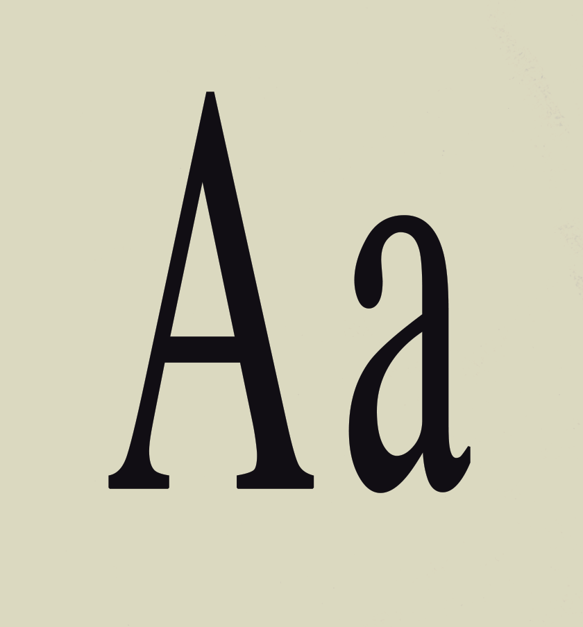
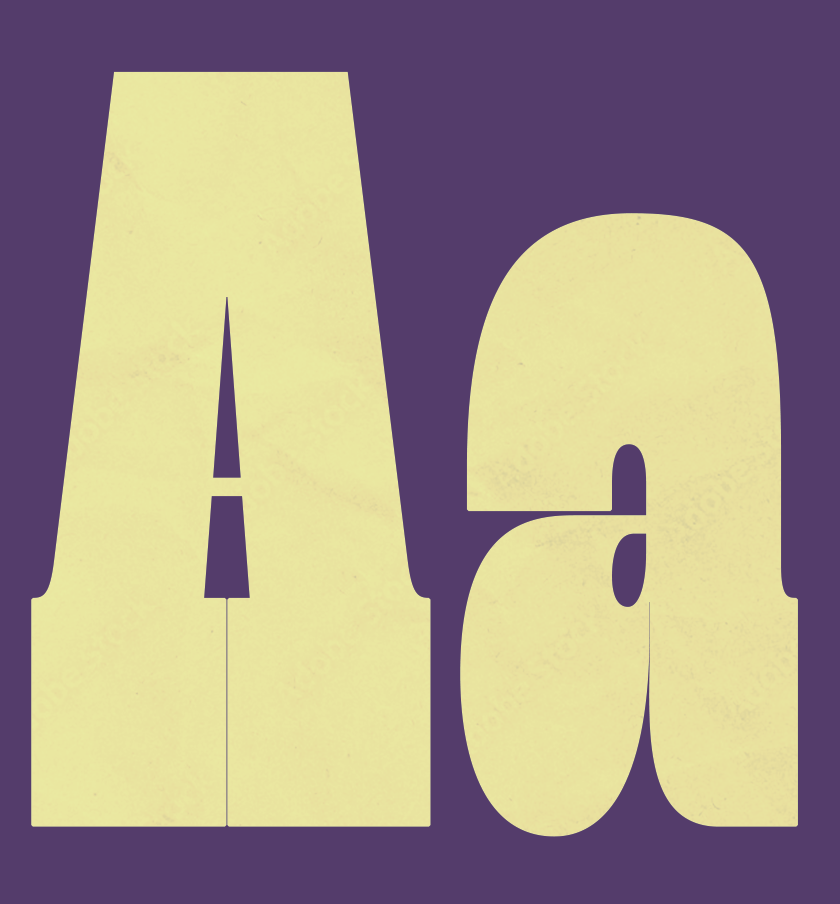
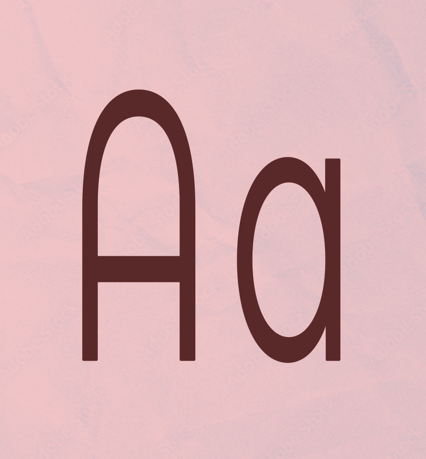

Times New Roman
Times New Roman may well be the most widely used typeface in the world. It is certainly the most common choice for body text, which is what it was designed for. Times New Roman is always a safe choice for the text of any report, newsletter, brochure, or publication. The Bold weight, which is not just a thickened version of the Regular, works well in headlines. The Italic serves well as a companion to the upright letters. When set in all capital letters, Times New Roman looks best with a little expanded space between the letters.

Gigantic
Dave Rowland Type, the foundry whose typefaces will breathe new life into your work. With a passion for fonts, Dave uses artistry and craft to transform your words with his captivating array of typefaces. More than just letters, his fonts are distinctly versatile, wildly detailed, and carefully refined. Whether you need a classic serif, modern sans, playful script, or quirky display, Dave Rowland Type embodies emotion, style, and storytelling.

Montserrat Alternates
Montserrat Alternates is a geometric sans-serif typeface designed by Julieta Ulanovsky. It was inspired by traditional signage found in the Montserrat neighborhood of Buenos Aires and reimagined for modern digital use. The typeface combines historical influences with a contemporary structure, making it both approachable and highly functional.